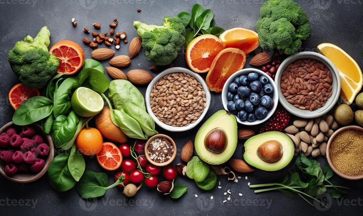

Kehidupan manusia yang bermula dari kesederhanaan kini menjadi kehidupan yang bisa dikategorikan sangat modern. Di jaman yang semakin canggihnya teknologi informasi dan komunikasi yang berkembang saat sekarang, segala sesuatu dapat diselesaikan dengan cara-cara yang praktis. Teknologi informasi dan komunikasi adalah sesuatu yang bermanfaat untuk mempermudah semua aspek kehidupan manusia. Dunia informasi saat ini seakan tidak bisa terlepas dari teknologi. Penggunaan teknologi informasi dan komunikasi oleh masyarakat menjadikan dunia teknologi semakin lama semakin canggih.
Baca Selengkapnya
Makanan sehat dibutuhkan tubuh untuk menjaga fungsi organ dan memastikan kinerjanya. Secara umum, jenis makanan yang tergolong dalam kelompok makanan sehat mengandung berbagai nutrisi. Syarat makanan yang sehat (4 sehat 5 sempurna), yaitu bersih, memiliki gizi yang baik dan seimbang. Keseimbangan makanan sehat adalah makanan yang memiliki kandungan karbohidrat, protein, lemak, dan vitamin.
Baca Selengkapnya